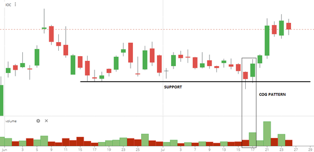
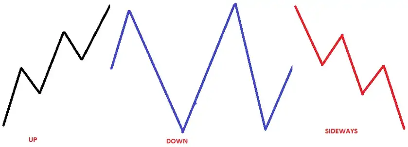
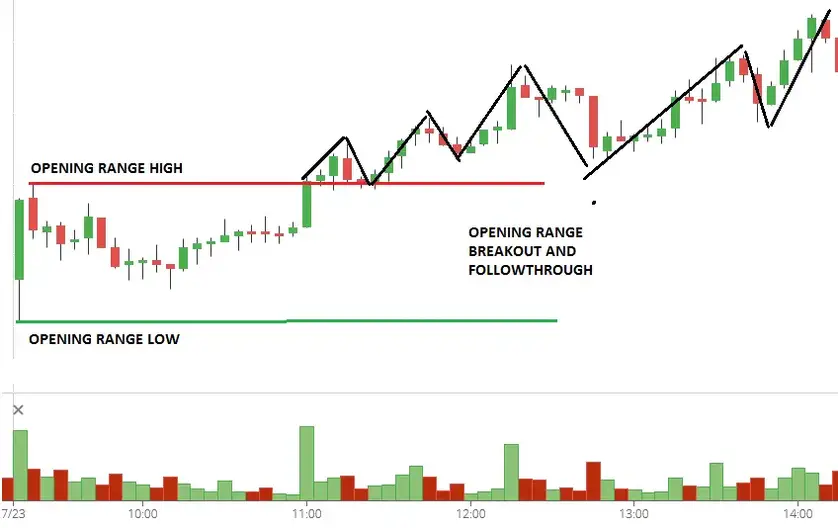
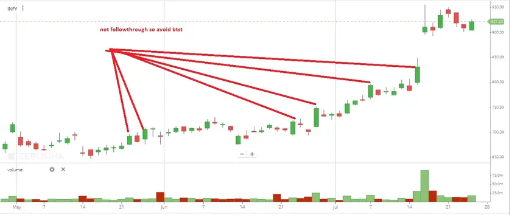

বিটিএসটি (আজ কিনুন আগামীকাল বিক্রি করুন) ট্রেডিং কৌশল
এই প্রবন্ধে, আমি বিস্তারিতভাবে বিটিএসটি ট্রেডিং কৌশল (আজ কিনুন, আগামীকাল বিক্রি করুন) আলোচনা করব। অনুগ্রহ করে আগের প্রবন্ধটি পড়ুন যা আপেক্ষিক শক্তি সূচক ট্রেডিং কৌশল আলোচনা করে। এই প্রবন্ধে বিটিএসটি (আজ কিনুন, আগামীকাল বিক্রি করুন) ট্রেডিং কৌশল সম্পর্কে সম্পূর্ণ বিস্তারিত আলোচনা করা হবে:
- দামের গতিপ্রকৃতির ভিত্তিতে কৌশল
- স্পষ্ট নিয়ম ভিত্তিক পদ্ধতি নির্ধারিত এন্ট্রি, লক্ষ্যমাত্রা এবং স্টপ লস সহ
- নির্দিষ্ট নিয়মের স্টক পিক্স যা স্পষ্টভাবে কোন স্টক ট্রেড করতে হবে তা বলে
বিটিএসটি (আজ কিনুন আগামীকাল বিক্রি করুন) ট্রেডিং কৌশল কি?
বিটিএসটি (আজ কিনুন, আগামীকাল বিক্রি করুন) একটি পদ্ধতি যা গ্রাহকদের ডেম্যাট অ্যাকাউন্টে শেয়ারগুলি ক্রেডিট হওয়ার আগে সেগুলি বিক্রি করার সুযোগ দেয় বা শেয়ারের ডেলিভারি গ্রহণ করে। বিটিএসটি এর বিপরীত হল এসটিবিটি, অর্থাৎ আজ বিক্রি করুন, আগামীকাল কিনুন।
এটি শেয়ার বাজারে একটি জনপ্রিয় ট্রেডিং কৌশল যেখানে একজন ট্রেডার কোনও একদিন শেয়ার কেনে এবং পরের দিন তা বিক্রি করে। এই কৌশলটি শেয়ার বাজারে রাতারাতি মূল্যের পরিবর্তন থেকে লাভবান হওয়ার জন্য ব্যবহার করা হয়। সাধারণত এটি এভাবে কাজ করে:
BTST ট্রেডিংয়ের কৌশল
চেঞ্জ অফ গার্ড (COG)
যৌক্তিকতা। ক্ষুদ্র আন্দোলনের দিক পরিবর্তন করুন
আরো তথ্যের জন্য, ক্যান্ডেলস্টিক প্যাটার্ন বিশ্লেষণ পড়ুন
COG এন্ট্রি হয়
- সমর্থন স্তর থেকে পুলব্যাক বিপরীত
- চাহিদা অঞ্চলের থেকে ট্রেন্ড বিপরীত
লং-এর জন্য মানদণ্ড
- আগের দিনের লাল ক্যান্ডেল ছোট হওয়া উচিত
- পরিষ্কার সমর্থন স্তরে দাম থাকা উচিত
- পরবর্তী সবুজ ক্যান্ডেল (বর্তমান t দিন) দাম লাল ক্যান্ডেলের (আগের দিন) উপরে বন্ধ হওয়া উচিত
- বর্তমান দিনের ক্যান্ডেল গ্যাপ আপ বা গ্যাপ ডাউন হতে পারে, এটা কোনো বিষয় না
- পূর্ববর্তী দিনের চেয়ে অধিক ভলিউম


ব্রেকআউট কৌশল
এখানে, আমি ব্রেকআউট ট্রেডিং কৌশল নিয়ে আলোচনা করেছি। সমস্ত লজিক এবং শর্ত একই ভাবে পড়ুন। কেবল একটি দৈনিক সময় ফ্রেমে চলে যান।
- মূল্য পরিষ্কার সমর্থনের নীচে এবং প্রতিরোধ স্তরের উপরে বন্ধ হওয়া উচিত
- আরও শর্ত। উপরোক্ত নিবন্ধটি পড়ুন
BTST ট্রেডিং কৌশলের জন্য স্টক নির্বাচন শর্ত
স্টক নির্বাচন করতে আমরা নিম্নলিখিত পরামিতিগুলি অধ্যয়ন করব
- চেষ্টাকৃত দিকনির্দেশনা (উপরে, নিচে, আড়াআড়ি) বা আন্তঃদিবস গঠন
- সৃষ্ট ভলিউম (উচ্চ, নিম্ন, অপরিবর্তিত)
- ক্লোজিং সুইং এবং ভলিউম
- ডেটা (ফিউচার এবং অপশন)
উপরে উল্লিখিত উপাদানগুলি অধ্যয়ন করে, আমরা স্মার্ট মানি কী অর্জন করার চেষ্টা করেছিল এবং সেই প্রচেষ্টা সফল ছিল কিনা তা সম্পর্কে একটি শক্ত ধারণা পেতে পারি। এবং সম্ভবত পরের দিনের প্রবণতা
অভ্যন্তরীণ গঠন
চেষ্টাকৃত দিকনির্দেশনা (উপরে, নিচে, আড়াআড়ি)

শুধু সেই স্টকগুলি নির্বাচন করুন যেগুলির ইন্ট্রাডে স্ট্রাকচার উপরের দিকে বা নিচের দিকে প্রবণতা আছে।
খোলার সীমা এবং ফলো-থ্রু

সেসব শেয়ার বেছে নিন যেগুলোর উদ্বোধনী পরিসরে বিরতি এবং অনুসরণ হয়েছে
সমাপনী সোয়িং এবং ভলিউম
- ধরা যাক বাজার অত্যন্ত অস্বাভাবিক ছাড়ের সাথে বন্ধ হয় (দিনের শেষে নিম্নমুখী হয়) অথবা অতিরিক্ত প্রিমিয়ামের সাথে (দিনের শেষে উচ্চমুখী হয়)। সেক্ষেত্রে, এটি ব্যবসায়ীকে উচ্চ এবং পরিষ্কার সংকেত দেয় যে পরবর্তী দিনে চালিয়ে যাওয়ার সম্ভাবনা রয়েছে।
- শেষ সোয়িং বা সমাপনী সোয়িং প্রায়ই সত্যটি বলে দেয় যে একটি ট্রেন্ড কতটা শক্তিশালী। “স্মার্ট মানি“ শেষ সোয়িং বা সমাপনী সোয়িং এ তার উপস্থিতি দেখায়, তাদের পক্ষে মার্কিং অবস্থান চালিয়ে যেতে থাকে। যদি বাজারে শক্তিশালী সমাপ্তি হয় (দিনের শেষে উচ্চমুখী), তাহলে একটি ঊর্ধ্বমুখী প্রবণতা চালানো যেতে পারে।
- সমাপনী সোয়িং এ উচ্চ ভলিউম আগামীর সকালের দিক নির্দেশ করে যে সমাপনী সোয়িং এর দিকেই চালিয়ে যাওয়া হবে।
ডেটা
ভবিষ্যতের ওপেন ইন্টারেস্ট
২) ওপেন ইন্টারেস্টে বৃদ্ধি এবং বাণিজ্য দিনের শেষ সুইংয়ের সময় মূল্যে বৃদ্ধির সাথে সাথে বৃদ্ধি। এটি ট্রেন্ডের শক্তি প্রদর্শন করে
অপশন ডেটা
- লং বিল্ডআপ বা শর্ট বিল্ডআপ
- শর্ট কাভারিং বা লং লিকুইডেশন মুভ এড়িয়ে চলা
নোট-অপশন চেইন বিশ্লেষণের জন্য অপশন চেইন ভিডিওটি চেক করুন, অথবা আপনি এটি পড়তে পারেন
পরবর্তী সাপোর্ট এবং রেজিস্ট্যান্স স্তর
- কারিগরি বিশ্লেষণের মাধ্যমে তাৎক্ষণিক সাপোর্ট এবং রেজিস্ট্যান্স বা সরবরাহ এবং চাহিদার অঞ্চলে কোথায় আছে
- অপশন সাপোর্ট এবং রেজিস্ট্যান্স স্তর
BTST কৌশলের জন্য স্টক নির্বাচন শর্ত
- পরিষ্কার স্বাস্থ্যকর মোমবাতি
- আজকের দাম আগের দিনের সর্বোচ্চ থেকে বেশি লেনদেন করছে (লম্বার জন্য)
- প্রবণতামূলক অভ্যন্তরীণ গঠন
- শেষ সুইংটি অবশ্যই প্রবণতামূলক হতে হবে এবং দিনের সর্বোচ্চে বন্ধ হতে হবে (লম্বার জন্য)
- শেষ সুইং ভলিউম এবং খোলা আগ্রহ বৃদ্ধি পাচ্ছে,
- প্রযুক্তিগত বিশ্লেষণ এবং অপশন ডাটায় পরামর্শ দেয় যে কাছাকাছি কোনো সমর্থন বা প্রতিরোধের স্তর নেই।
অড উন্নতকারী
সূচক
সাধারণ বাজার বা সূচক কী করছে তা নির্ধারণ করুন।
- প্রবণতামূলক
- সমর্থন বা প্রতিরোধ অঞ্চলে
প্রথমত, সূচক (নিফটি) এ সমর্থন এবং প্রতিরোধ অঞ্চলগুলি নির্ধারণ করুন । যদি বাজারগুলি সমর্থন অঞ্চলের কাছাকাছি বন্ধ হয়, আমি জানতাম যে পরের দিন কেনার সুযোগগুলি সন্ধান করতে হবে কারণ দাম সম্ভবত সেই সমর্থন অঞ্চল থেকে উদ্দীপ্ত হতে পারে।
সেক্টর নির্বাচন
চার্ট সেক্টরগুলিতে নজর দিন যা সমর্থন অঞ্চলের কাছাকাছি লেনদেন করছে, যেহেতু সেগুলি সম্ভবত পরের দিন সূচক (নিফটি) বাজারের সাথে সেই সমর্থন অঞ্চল থেকে উদ্দীপ্ত হতে পারে। কয়েকটি সেক্টরের মধ্যে, আমি সবসময় এক বা দুইটি খুঁজে পেতাম যা ব্যাপক বাজার (সূচক) এর সাথে খুব ভালভাবে প্রস্তুত ছিল।
- যদি সূচকটি বুলিশ থাকে, তবে BTST এর জন্য একটি শক্তিশালী সেক্টর নির্বাচন করুন
সংবাদ স্টক
যে সেক্টরগুলি বারবার সংবাদ ভিত্তিক হয় সেগুলি এড়িয়ে চলুন (যেমন ফার্মা)
ইতিহাস যাচাই করুন
- স্টকের ইতিহাস যাচাই করুন এবং দেখুন স্টকটি পরপর শক্তিশালী দিনে অগ্রসর হতে পারে কি না। যদি হ্যাঁ হয়, তবে নির্বাচন করুন

Ol-OH
- যদি স্টকটি ওপেন হাই বা ওপেন লো দিয়ে খোলে
- যদি ওপেন লো বা ওপেন হাই দিয়ে খোলে তাহলে আত্মবিশ্বাস যোগ করুন
Exit
- বেশিরভাগ সময়, এই স্ক্রিপ্টগুলি পরের দিন একটি গ্যাপ আপ সহ খোলা হয়। পরবর্তী সেশনে ৫-১০ মিনিটের মধ্যে মুনাফা বুক করতে হবে।
- যদি মূল্য আপনার এন্ট্রি নির্দেশনার দিক থেকে খোলার পর শক্তিশালীভাবে চলে যায়, আপনি আপনার স্টপ লস ট্রেইল করতে পারেন।
- যদি বাজারটি শক্তিশালী প্রিমিয়াম (দিনের উচ্চতায় ক্লোজিং) দিয়ে বন্ধ হয় তবে পরের সকালে দুর্বল খোলে (গ্যাপ ডাউন), তাহলে প্রথম পদক্ষেপটি ঊর্ধ্বমুখী হবে পূর্ববর্তী দিনের উচ্চতা পরীক্ষা করতে (গ্যাপ পূরণ করতে)। যদি বাজারটি দুর্বল হয়ে বন্ধ হয় এবং ফিউচার্স ডিসকাউন্ট সহ বন্ধ হয় (দিনের নিম্নতে ক্লোজিং), তবুও পরের সকালে বাজারটি গ্যাপ আপ করে, প্রথম পদক্ষেপটি নিচের দিকে গ্যাপ পূরণের জন্য পুনঃপরীক্ষা করা উচিত।
- ধরা যাক মূল্যটি গ্যাপ ডাউন (আপনি BTST নিয়েছেন)। আপনি সঙ্গে সঙ্গে বেরিয়ে আসতে পারেন অথবা খোলার পরিসরের জন্য অপেক্ষা করতে পারেন এবং স্টপ লস স্থাপন করতে পারেন অথবা প্রথম পাঁচ মিনিটের ক্যান্ডেলের জন্য অপেক্ষা করতে পারেন এবং স্টপ লস স্থাপন করতে পারেন। এটি সম্পূর্ণরূপে আপনার ঝুঁকির উপর নির্ভর করে।
Entry
বিটিএসটি ট্রেডিং কৌশলসমূহ:
বিটিএসটি “আজ কিনুন, কাল বিক্রি করুন” এর জন্য দাঁড়ায়। এটি একটি ট্রেডিং কৌশল যেখানে একজন ট্রেডার এক দিন আগে স্টক কিনে এবং পরের দিন বিক্রি করে, রাতারাতি মূল্যের পরিবর্তনের সুবিধা নেয়। এই কৌশলটি প্রায়ই স্টক মার্কেটে ব্যবহৃত হয়, যেখানে নিষ্পত্তি চক্র এমন লেনদেনকে অনুমোদন করে। একটি বিটিএসটি কৌশল বাস্তবায়নের জন্য একটি সহজ পদ্ধতি এখানে রয়েছে:
১. স্টক নির্বাচন:
- ভলিউম: লিকুইডিটি নিশ্চিত করতে উচ্চ ট্রেডিং ভলিউমের স্টকগুলি খুঁজুন।
- সংবাদ ও ঘটনাবলি: মার্কেট সময় শেষ হওয়ার পর ইতিবাচক সংবাদ প্রকাশ বা ঘটনাসমূহের সাথে থাকা স্টকগুলো সনাক্ত করুন যা পরের দিন গ্যাপ আপ হতে পারে।
- টেকনিক্যাল এনালাইসিস: দিনের উচ্চতায় বা তার কাছাকাছি একটি শক্তিশালী ক্লোজিং প্রদর্শনকারী স্টকগুলি নির্বাচন করুন, যা বুলিশ গতির ইঙ্গিত দেয়।
- মার্কেট সেনটিমেন্ট: মোটের ওপর, মার্কেট সেনটিমেন্ট আপনার নির্বাচিত স্টকগুলিকে অনূকূল করেছে তা নিশ্চিত করুন।
২. এন্ট্রি স্ট্র্যাটেজি:
- সময় নির্বাচন: যদি স্টক এখনও শক্তি প্রদর্শন করে তবে ট্রেডিং সেশনের শেষ অংশে কেনার আদেশ কার্যকর করুন।
- প্রাইস একশান: স্টকটি শুধুমাত্র হঠাৎ করে বাড়ছে না, বরং টেকসই কিনতে আগ্রহ যাচাই করুন।
- পজিশনের আকার নির্ধারণ: ঝুঁকি ব্যবস্থাপনা নিয়মের ভিত্তিতে পজিশনের আকার নির্ধারণ করুন।
৩. প্রস্থান কৌশল:
- প্রি-মার্কেট বিশ্লেষণ: বাজার কীভাবে খোলবে তা নির্দেশ করার জন্য প্রি-মার্কেট প্রবণতা পরীক্ষা করুন।
- উদ্বোধনী মূল্য: যদি স্টক উচ্চতর খোলে, তাহলে বাজার পরিস্থিতি মূল্যায়ন করুন। বৃহত্তর বাজার শক্তিশালীভাবে খুলছে কি? কোনও নতুন ইভেন্ট ঘটছে কি?
- লাভ বুকিং: লাভ বুকিংয়ের জন্য একটি স্পষ্ট লক্ষ্য মননে রাখুন এবং আপনার লক্ষ্য অর্জিত হলে বা বাজার খোলার প্রথম ১৫ থেকে ৩০ মিনিটের মধ্যে স্টকটি বিক্রি করুন, কারণ এ সময়ে বৃহত্তম মুভমেন্টগুলি প্রায়শই ঘটে।
- স্টপ লস: যদি ট্রেড আপনার বিরুদ্ধে যায়, তবে ট্রেড থেকে প্রস্থান করতে একটি স্টপ লস থাকুক।
৪. ঝুঁকি ব্যবস্থাপনা:
- স্টপ লস অর্ডার: সম্ভাব্য ক্ষতির সীমাবদ্ধ করতে সর্বদা স্টপ-লস অর্ডার ব্যবহার করুন।
- অতিরিক্ত এক্সপোজার এড়ান: একক BTST ট্রেডে আপনার মূলধনের একটি বড় অংশ বিনিয়োগ করবেন না।
- পজিশন সাইজিং: ঝুঁকি কার্যকরভাবে পরিচালনা করতে আপনার পজিশনগুলি সঠিকভাবে মাপুন।
৫. বাজার গবেষণা:
- উপার্জন ক্যালেন্ডার: উপার্জনের প্রকাশের তারিখ সম্পর্কে সচেতন থাকুন, কারণ উপার্জন ঘোষণার পরে স্টকগুলি রাতারাতি উল্লেখযোগ্যভাবে পরিবর্তিত হতে পারে।
- অর্থনৈতিক সূচক: পরের দিনের জন্য নির্ধারিত অর্থনৈতিক ইভেন্ট বা ডেটা প্রকাশ সম্পর্কে সচেতন থাকুন, যা বাজারের অনুভূতিকে প্রভাবিত করতে পারে।
BTST কৌশলের সুবিধাগুলি:
- সময়ের দক্ষতা: এই কৌশলটি দিনের বেলা বাজার পর্যবেক্ষণের প্রয়োজন নেই।
- রাত্রিকালীন লাভ: ব্যবসায়ীরা উল্লেখযোগ্য রাতারাতি দাম পরিবর্তন থেকে লাভ করতে পারে।
BTST কৌশলের অসুবিধাগুলি:
- গ্যাপ ডাউন ঝুঁকি: স্টক আগের দিনের ক্লোজ থেকে কম খুলতে পারে, যা ক্ষতির দিকে নিয়ে যেতে পারে।
- সীমিত গবেষণার সময়: কারণ সিদ্ধান্তগুলি ট্রেডিং দিনের শেষের দিকে নেওয়া হয়, গবেষণার জন্য কম সময় থাকে এবং দ্রুত সিদ্ধান্ত নিতে হতে পারে।
- বিধানিক পরিবর্তন: সিকিউরিটিজ সেটেলমেন্ট সম্পর্কিত বর্তমান নিয়মগুলি সম্পর্কে সর্বদা সচেতন থাকুন যাতে কোনও সেটেলমেন্ট ঝুঁকি এড়ানো যায়।
আইনি ও বাজার বিবেচনা:
- নিষ্পত্তি নিয়মাবলী: BTST লেনদেনগুলি স্টক এক্সচেঞ্জের নিষ্পত্তি নিয়মাবলী মেনে চলে কিনা তা নিশ্চিত করুন।
- ব্রোকারেজ হাউসের নিয়মাবলী: কিছু ব্রোকারেজ ফার্মের BTST লেনদেনের জন্য নির্দিষ্ট নিয়ম বা ফি থাকতে পারে।
BTST ট্রেডিং সঠিক গবেষণা এবং কঠোর শৃঙ্খলা, বিশেষত ঝুঁকি ব্যবস্থাপনায়, লাভজনক হতে পারে। তবে, মনে রাখা গুরুত্বপূর্ণ যে এই ধরনের কৌশলগুলি নিজস্ব ঝুঁকি নিয়ে আসে এবং অনভিজ্ঞ ব্যবসায়ীদের দ্বারা সতর্কতার সাথে তালাশ করা উচিত।